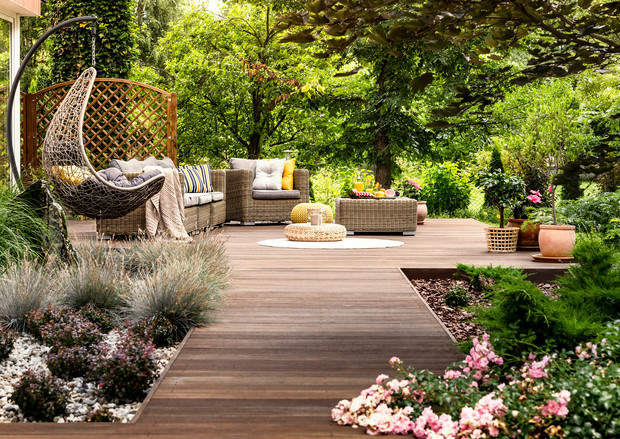
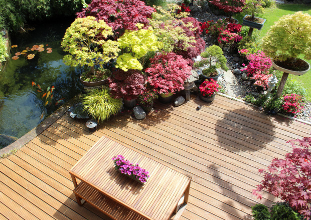
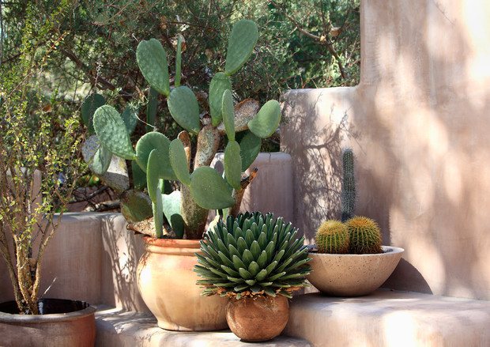
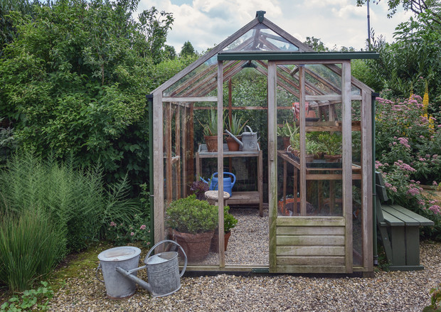
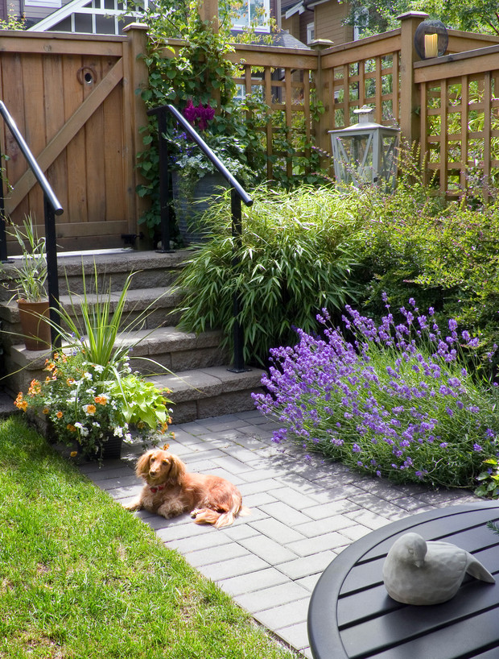

Somos expertos en el arte de diseñar, rehabilitar, crear, y conservar espacios naturales, respetando la configuración del medio ambiente de forma consciente.
Se trata de visualizar una imagen para un espacio y luego, crear ese espacio en una labor de carácter multidisciplinario.
Renovar completamente tu jardín o patio trasero requiere de mucha planificación, pero si estás listo para convertir tus sueños de jardinería en realidad, primero debes saber por dónde empezar. ¿Qué es el paisajismo? La arquitectura del paisaje o paisajismo es el arte de diseñar, rehabilitar y conservar espacios naturales, respetando la configuración del medio ambiente de forma consciente. Se trata de visualizar una imagen para un espacio y luego, crear ese espacio en una labor de carácter multidisciplinario. Aquí te daremos algunos consejos e ideas para que pongas a prueba tus habilidades de paisajista, sin embargo, te recomendamos asesorarte con un profesional.
El primer paso para renovar tu espacio exterior es determinar exactamente lo que quieres. ¿Quieres crear un huerto en casa? ¿Un espacio para tus mascotas? ¿Un área para reuniones familiares? ¿Deseas privacidad? ¿Tu espacio está rodeado de muros u otros edificos? Hazte estas preguntas y crea una lista de acuerdo a tus necesidades y deseos.
Es particularmente importante tomar nota de la cantidad de sol que recibe tu jardín, las áreas de sombra y las que se encharcan cuando llueve. Esto te ayudará a abordar las áreas problemáticas existentes, a elegir las plantas que sean apropiadas para cada clima y definir los lugares de descanso.
Hasta los más grandes genios del diseño buscan inspiración (o la encuentran en los rincones más inesperados) , por lo que una vez que te hayas familiarizado con tu jardín y el diseño que mejor se adapta a tu estilo de vida, busca inspiración en internet, libros de jardinería, parques o jardines botánicos.
El uso de materiales naturales harán de tu jardín un lugar más armónico. Sin embargo, si deseas aventurarte un poco más, deberás combinar las texturas, tamaños y colores de tus superficies duras (pasillos, paredes, fuentes) con las suaves (árboles, arbustos, césped) para crear un paisaje cohesivo.
